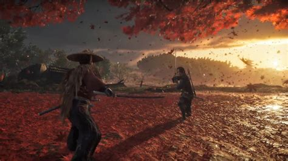

Ghost of Tsushima
A XIII. század végén a Mongol birodalom teljes nemzeteket döntött pusztulásba, mikor a Kelet meghódítására indult. Tsushima szigete az egyetlen bástya, ami a Japán szárazföld és a ravasz és könyörtelen tábornok, Khotun kán vezette hatalmas hódító mongol flotta között áll..

Mikor a szigetet felperzseli a mongol támadás, a szamuráj harcos, Szakai Dzsin klánjának egyetlen túlélője marad. Megfogadja, hogy megvédi népét és visszaszerzi otthonát, bármi legyen is az ára. El kell szakadnia a szamuráj tradícióktól, amelyek harcossá edzették, és saját útját járnia: a Szellem ösvényét, melyben saját eszközeivel vív különleges háborút Tsushima szabadságáért. Bekerült a Platinum Hall of Fame-be a New Game Cross Review szekcióban a Weekly Famitsu 2020. július 30-i számában (kiadás napja július 16.) Ez a harmadik nem Japánban készült játék, amely tökéletes pontszámot kapott a neves japán Weekly Famitsu gamermagazin újságíróitól.